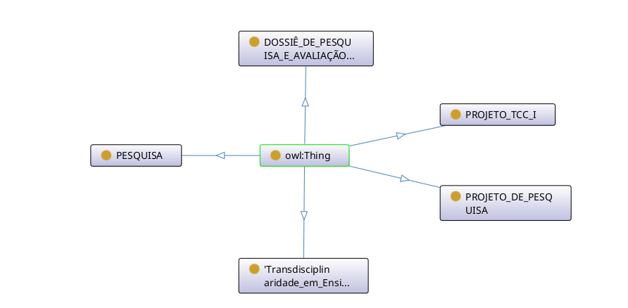

Repositório da ontologia e estruturação conceitual da pesquisa.
O grafo abaixo ilustra as classes principais conectadas ao owl:Thing, englobando elementos como PESQUISA, PROJETO_TCC_I e DOSSIÊ_DE_PESQUISA_E_AVALIAÇÃO:

Pode aceder ou descarregar o código fonte da ontologia em formato RDF/XML para reutilização:
Descarregar Ficheiro .RDF